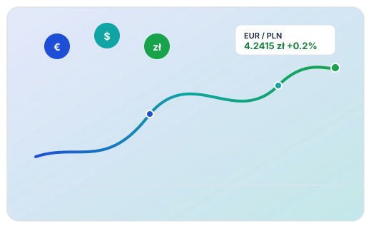

EUR
Euro
Kurs średni:
4.2415 zł
Kupno: 4.2010 zł
Sprzedaż: 4.2820 zł
Oficjalne notowania Narodowego Banku Polskiego (Tabela A i C) | Ostatnia aktualizacja danych: 23 października 2026 r.
Śledź dzienne notowania, analizuj trendy historyczne najważniejszych walut światowych oraz błyskawicznie przeliczaj kwoty według kursów średnich, kupna i sprzedaży.

Kluczowe kursy bazowe względem polskiego złotego (PLN)
Oblicz wartość wymiany na podstawie kursów historycznych lub bieżących NBP
Wykres odzwierciedla wahania kursu wybranej waluty bazowej w relacji do PLN. Pełną analizę statystyczną, wariancję oraz wskaźniki min/max/średnia sprawdzisz w module analitycznym.
Przejdź do pełnej analizy rynkowej →